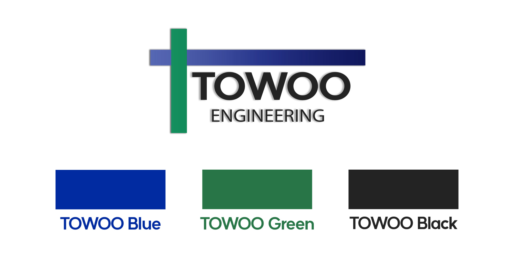

TOWOO Engineering의 C.I는 타워 크레인의 형태를 모티브로 하였습니다.
이는 기술과 자연이 한 곳에서 만나 조화를 이루며 미래를 항해 뻗어나가는 TOWOO Engineering의 가치를 나타냅니다.
TOWOO Engineering의 파란색은 기술을, TOWOO Engineering의 초록색은 자연을 의미합니다.
Corporate Identity
TOWOO Engineering은 미래를 만들어 갑니다.
CI 소개TOWOO Engineering C.I(Corporate Identity)
